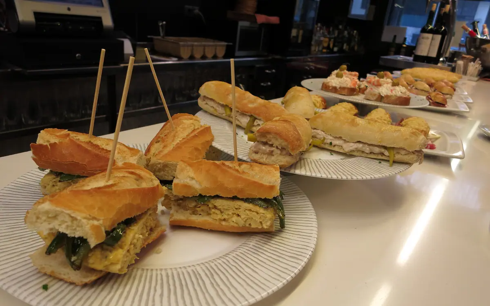

AHAMEN
Pintxos y raciones
Pintxos fríos
- Gilda2,20 €
- Anchoa con piparra2,80 €
- Tortilla de patata2,50 €
- Ensaladilla2,50 €
- Bacalao con pimiento3,20 €
Pintxos calientes
- Croqueta de jamón2,00 €
- Champiñones a la plancha3,00 €
- Brocheta de langostinos3,50 €
- Txistorra2,50 €
Raciones
- Patatas bravas6,50 €
- Rabas9,00 €
- Pimientos de Padrón7,00 €
- Croquetas, seis unidades8,00 €
- Chipirones a la plancha12,00 €
Precios de ejemplo, IVA incluido · Kale Nagusia 1, Tolosaldea